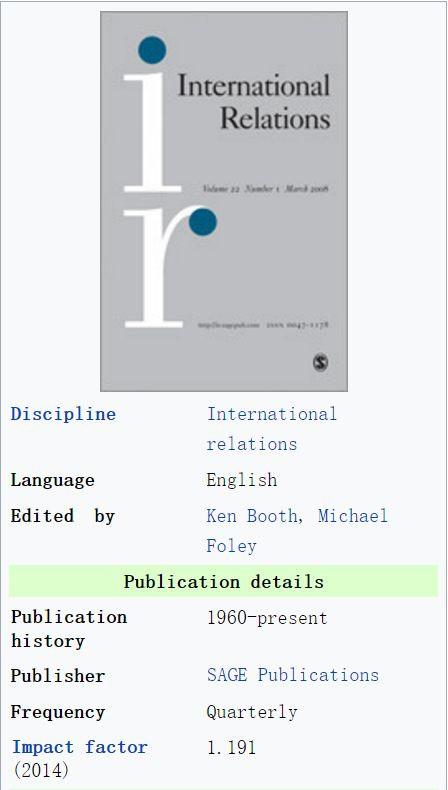

收录于合集

简 介
** 【文章原题】**
**A human rights tragedy: strategic localization of US foreign policy in
Colombia**
** ** 【作者介绍】****
Salvador Santino Fulo Regilme Jr， 莱顿大学历史学院国际关系学院的终身讲师，《美国霸权与新兴大国崛起》(Routledge出版社，2017年)的联合编辑，《国际研究视角》、《第三世界季刊》、《人权评论》等多篇同行评议文章的作者。他于2015年在柏林自由大学(Freie university)获得政治学和北美研究的联合博士学位，之前曾在耶鲁大学(Yale)、奥斯纳布吕克大学(Osnabruck)和哥廷根大学(Gottingen)学习。他目前的新书项目暂定为《博爱帝国:美国的对外援助、外交和东南亚的人权》。
**** ** ** 【文章来源】**** ****
International Relations __ Vol 32, Issue 3, 2018
** ** 【期刊介绍】**** ** ** ********

【编译】 杨艺华
【校对】 李代霓，李源
核心内容
观念和政治话语如何影响 以及在多大程度上影响一个强大国家与其弱小盟友之间的双边合作?尽管双方达成了合作协定，为什么较弱的国家的行动与强国的期望和偏好依然背道而驰？本文从建构主义和委托代理框架的角度，对美国政府与哥伦比亚(美国在该地区的长期盟友)在911恐怖袭击后的反恐合作进行了概念性的解读分析。该个案研究表明了三点。首先，提供安全不仅是在国内层面构想出来的，而且也是在跨国领域产生的;其次， 这种对安全的提供不仅是一种以物质为导向的政治活动，更是一种观点上的交流，在这种交流中政治行动者使国家间的合作合法化和便利化; 最后，不仅强国会在两国关系中拥有权力，而且弱国还会对强国的权力进行战略重组来获得权力。
一、关于合作的理论：委托代理（PA）框架和战略本土化
PA框架揭示了当实体X(委托人)要求实体Y(代理人)以指定的价格代表他去执行一项行动时的起源和后果。在这种双边关系中，因为代理人和委托人的偏好和信息水平都不同，所以PA框架认为他们之间存在双重不对称。在偏好不对称的情况下，代理人并不总是以完全符合委托人偏好的方式行事。由于信息不对称，委托人可能能够观察到代理人执行任务的结果，但委托人不一定能够全面了解代理人的执行模式和整个过程。也就是说，强国和弱国之间的双边合作必然会遇到两个关键问题:信息不对称和偏好不对称。
在将PA框架应用于911后的美国– 哥伦比亚案例时，应注意以下两点。首先，作为委托人，布什政府领导的美国政府发动了全球反恐战争，并寻求哥伦比亚的帮助以遏制武装共产主义叛乱和非法贩毒集团（这两件事都被认为有损美国在安第斯地区的利益）。第二，正如下一节所讨论的那样，作为代理人的哥伦比亚政府在利用外部物质资助加强国家镇压方面，享有相对广泛的自由裁量权。
考虑到PA框架，美哥关系有了两个值得注意的问题。第一个问题是偏好的不对称，处于安全危机中的美国政府向其盟国提供对外援助的基础是，只有武装的共产主义叛乱分子和参与武装非法贩毒集团的人才会受到国家的暴力镇压。由于对外援助本质上是可替代的，许多哥伦比亚国家机构(主要是军方)誓言要从美国的对外援助中获利。所以，他们杀害平民，然后将其假扮成武装战士。第二个问题是信息不对称。考虑到反恐合作的复杂性，美国政府和美国公众花了一些时间才知道哥伦比亚军队蓄意杀害无辜平民。在许多方面，使用外国援助方面缺乏严格的控制机制，以及给予哥伦比亚武装部队灵活的行政自由裁量权，助长了这些严重侵犯人权的行为。从理论上讲，当委托人授予代理人广泛的自由裁量权去执行他们所期望的行动，但对其缺乏严格的控制和检查制衡机制时，信息不对称问题就会加剧。
在911后的美哥关系中，美国想要生产什么跨国公共产品呢？实际上，两国想要加强地区和国家政治军事安全。这里的政治军事安全是指，同盟国和友好国家之间就可察觉威胁的防卫和进攻能力的战略考虑上的共同利益，还有维持和推广政体、意识形态和普世价值观的各自和共同的能力。
从理论上讲，弱小国家之所以同意在强化双方的政治军事安全方面成为强大国家的代理人，有以下两个原因。
第一，尽管委托人(美国)可能拥有强大的能力和资源，但如果没有其他国家的共同努力，就不可能提供跨国政治军事安全。 特别是在面临诸如跨国恐怖主义等跨国安全威胁的情况下，国家间的合作是必要的。
第二，弱小国家可能有一些隐性或未披露的利益，并且它们试图通过与霸权国家合作来促进这些利益。霸权国不一定对实现弱小盟友的所有目标感兴趣，但仍会容忍这种合作。如果美国政府最主要的关心是消除对美国利益构成直接和立即威胁的恐怖分子，甚至不惜牺牲一些他们看来很重要但是有时候非必要的核心价值观如人权,那么他们就有可能与具有尖锐人权问题的国家进行合作。
那么，在提供国际安全方面的国家间合作究竟是如何进行的？ 合作产生的条件是什么?作者认为，美国和哥伦比亚的精英的战略本土化或对跨国安全话语的“重新包装”促进了战略的合法化、扩大了合作的范围并且扩充了在弱小国家实现合作的方式。
源自于国际关系中建构主义的战略本土化，是一种更为微妙的安全化形式。具体来说，安全化是指“某一问题被赋予足够的显著性以赢得受众的同意，从而使被授权处理该问题的人能够使用他们认为最合适的任何手段”。因此，安全化由三个重要步骤组成:(1)由行为人指定存在威胁;(2)行为人断言此类威胁需要“紧急行动或特别措施”;（3）公众接受这类指定。请注意，主要由跨国和国内精英等相关行动者发起安全化行动，而其给出的具体的因果信念、想法和各种理由是否能够成功则取决于公众是否“接受”这样的框架。通过安全化，国家重新定义了安全问题、国家需要解决的“问题”目标、以及解决问题的政策。
安全化涉及到通过非物质工具创造新的因果性和规范性信念、观念和论点，这些工具被称为“话语”。简而言之，“安全化”（更准确地说是本文中的战略本土化），是一个过程而不是一个单一事件。这些话语充当了导航，使政治家们可以按其行动。
然而，作者对战略本土化的看法不同于阿米塔夫•阿查里亚(Amitav Acharya)的“宪法本土化”，因为战略本土化强调了伙伴国的精英及其盟友如何将外部规范重新定义为一种政治战略，其核心目标是增强政治权威并促进政权的生存。阿查里亚似乎认为“观念确实重要”，并显然削弱了物质利益的重要性。但是，战略本土化的概念是，由于潜在的工具主义和唯物主义观点，当地的行为者重新定义了外部规范。简而言之，弱小国家的国内行动者将外部规范本地化，以便使其对预期的当地接受者和跨国利益攸关方(特别是美国)更具吸引力。
战略本地化具有一些具体和实质性的政治和政策影响，特别是在国际合作方面。尽管美国政府可能资助反恐战争的伙伴国家打击武装的非国家敌人，但哥伦比亚也增加了额外的目标以巩固自己的政权。哥伦比亚政府对当地民众和手无寸铁的持不同政见者实施了系统性的镇压（这一举措既没有得到美国政府的明确鼓励，也没有得到美国政府的许可），其目的是提高人们对本国政权实力和权威的认识。
二、 话语 和政策 :美国反恐战争和哥伦比亚计划
（一）美国进行战略本土化的话语和政策
在过去50年左右的时间里，哥伦比亚的非法毒品贩运和生产一直是美哥关系中的最重要的安全问题之一。为此，美哥双边关系涉及广泛的政治、经济和安全利益。
美国政府在哥伦比亚长期的反毒品战争中所扮演的角色有着相当长的历史。事实上，上世纪70年代初的尼克松政府就在安第斯地区(尤其是哥伦比亚)发起了一场由美国资助的禁毒战争。上世纪90年代，就在冷战刚刚结束时，克林顿政府在美哥双边关系中的首要任务是大幅削弱非法毒品的贩运和生产。所以，美国对哥伦比亚的援助主要集中在加强哥伦比亚警方和军队在反叛乱框架内的机构能力。在过去十年左右的时间里，哥伦比亚获得了大量美国援助，这旨在解决毒品问题，特别是通过哥伦比亚计划。2000年，美国国会批准拨款13亿美元作为哥伦比亚计划的第一笔捐款，到2005年将达到45亿美元。美国根据哥伦比亚计划提供的援助超过了美国向拉美国家提供的所有其他援助计划，对哥伦比亚的年度拨款超过了除以色列和埃及以外的所有其他受援国。
然而，911恐怖袭击后，布什政府发动了一场全球反恐战争，这从根本上影响了美国与其他关键盟国的双边关系的战略重点。在911之前，“哥伦比亚计划”被描述为“消灭毒品的努力、培训和向哥伦比亚军队提供物资，以打击该国的古柯种植和加工实验室”。
911恐怖袭击后，美国的外交政策转向反恐并改变了政治话语，从而为哥伦比亚武装部队和警察机构的能力建设和大量以恐怖主义为导向的援助与政治支持提供了理由。作为安全化战略的一部分，美国和哥伦比亚的政治精英们将非法毒品和恐怖组织联系起来，从而为“哥伦比亚计划”辩护，由此创造了一个新术语“毒品恐怖主义”。“毒品游击”和“毒品恐怖主义”等在政治上有争议的词语凸显了波哥大国家安全战略以及美国在哥伦比亚外交政策的转变。值得注意的是，在波哥大和华盛顿特区政府官员的政治演讲、公告和演讲中，这些术语不断地变得更加突出。非法毒品和非国家武装恐怖主义之间的这种杂乱无章的联系直到2001年之后才出现，也就是哥伦比亚计划正式启动一年后。
在政策方面，布什政府在2002年初取消了美国对哥伦比亚军事援助的禁令，这一决定意味着当地反叛乱战略与打击非法毒品走私援助的目标相结合。这也意味着，“哥伦比亚计划是美国第一次开始大力帮助哥伦比亚军方(而非警方)执行反毒任务”。此外，911事件后，美国国务院将哥伦比亚境内的三个非法武装叛军组织(包括共产主义的哥伦比亚革命武装力量)重新归类为“外国恐怖组织”，这进一步使禁毒和反恐战略的融合合法化。进而，这些论述和实际政策相互补充，反映了布什政府和乌里韦政府在利益融合方面的关键变化。
从2000年到2012年，美国国会承诺为哥伦比亚军队实施哥伦比亚计划提供大约80亿美元的反恐援助。从2003年开始,美哥开始了将反毒品战争和哥伦比亚版本的全球反恐战争（即反叛乱）相融合的三阶段战略。首先,美国支持哥伦比亚政府去控制那些被FARC和其他非法武装叛乱组织有效控制的领土。第二，哥伦比亚政府在这些重新获得的领土上派驻了常设国家机构和警察部队。第三，在重新取得领土之后，哥伦比亚政府又设立了国家文职机构来为当地提供社会经济发展等公共产品。
最终，美国在哥伦比亚波哥大的大使馆报告了以下成就：美国国会认识到哥伦比亚的恐怖主义与非法毒品贸易密不可分，因此在2002年授权扩大新的法定权力，这使得美国对哥伦比亚的援助更加灵活，以更好地支持乌里韦总统打击毒品和恐怖主义的统一行动。2004年，乌里韦政府首次控制了全国1099个直辖市(县城)，这是哥伦比亚近代历史上的第一次。从2002年到2005年，非法武装组织对农村城镇的袭击减少了91%。
（二）哥伦比亚进行战略本土化的政治话语与政策
哥伦比亚总统阿尔瓦罗·乌里韦(2002-2010)和他的盟友们使用了几种分散的策略，以便有效地将基调转向统一的以恐怖主义为导向的反非法毒品战略。
首先，根据布什政府以反恐为导向的外交政策，911事件后的哥伦比亚政府将涉及毒品走私问题的任何参与者重新归类为“恐怖分子”。
其次，人权优先于公共安全的问题也成为911后安全治理政策要解决的关键问题之一。在这方面，哥伦比亚国防部的官方政策文件暗示，民主政府的人权和其他非军国主义目标只有在维持安全的情况下才能实现。通过将人权定义为军事安全的附属品，哥伦比亚政府试图增强军国主义的合法性并为美国在哥伦比亚毒品问题上重新实施干预政策辩护。在911之前，哥伦比亚和美国政府认为武装的共产主义叛乱组织和非法贩毒集团是两种不同的安全威胁，这一区别还需要两种不同的策略来应对。911事件后，布什政府和乌里韦政府提出，这两个特殊群体通过共同资助他们的反叛活动来相互支持。
实际上，与哥伦比亚计划和美国全球反恐战争相关的政治和政策论述反映了一种强烈的模糊感，以至于对话者充分利用了这种模糊感来为自己提供了优势。白宫和其他美国关键官员担心高度不安全的哥伦比亚可能会以滋生非国家恐怖组织的方式破坏中美洲的稳定，从而对美国利益造成不利影响。然而，一些迹象表明乌里韦政府偏离了美国的官方政策立场，尤其是哥伦比亚政府在反恐战争的背景下严厉批评了几乎所有形式的政治异见。这种镇压范围的战略扩张不仅限于乌里韦政府对反恐战争的政治论述，因为还有对哥伦比亚手无寸铁的政治反对派行动者进行暴力镇压的实际的国家政策。
三、 911 事件后哥伦比亚 的 人权 危机
事实上,一个哥伦比亚与美国公民社会组织联盟证实了在2000年至2010年期间美国对哥伦比亚的反恐外交政策如何使得镇压的目标从恐怖分子扩大到了平民。基于哥伦比亚的5763例死刑数据和美国对哥伦比亚军事援助的报告，我们发现,接受美国援助培训的数量和法外处决之间存在一种正相关的关系。
这些由国家领导的镇压活动的目标是谁? 事实上，哥伦比亚最高情报机构行政安全部制定并大力实施了代号为“万圣节行动”的行动。该行动的目的是，破坏非政府组织和公民社会中的其他行为体，并且打破反对党和反对运动的统一性。另外，为了摧毁人权活动和机构的声誉并破坏美洲人权委员会的合法性，该行动将其和游击与叛乱团体相联系。在美哥反恐战略和财政资金的支持下，当地的准军事组织在大规模有计划地杀害武装叛乱分子和平民中发挥了关键作用。
更糟糕的是,这种双边合作的险恶的元素是，个别哥伦比亚国家机构出于不可告人的动机利用了反恐话语和美国对外援助，从而偏离了美国和哥伦比亚的国际人权承诺。在2008年的“假阳性”丑闻(也被称为“用现金杀人”)中，独立的法律检察官估计，哥伦比亚士兵和政府支持的准军事部队在全国范围内杀害了大约3000名平民，并将其伪装成游击队特工以宣称其为武装叛乱分子。
四、结论
政治军事安全既不是纯物质的也不是纯观念的跨国公共物品。更确切地说，这是两个或两个以上国家根据共同期望的部分汇合而制定的有关公共政策的含糊其辞和实质性实现的结果。这部分是因为，只有合作国在其认为的紧迫的目标上取得一致时，出于维持跨国或区域安全等公共产品的目的而进行的国家间的合作是才会出现。
为什么观念、政治话语和共同的期望对国际安全等公共物品的合法化和政策实现至关重要? 为什么美国和哥伦比亚政府不得不随着时间的推移而从战略上重新构建他们的话语，就像911袭击之后发生的那样? 首先，为了维持美国所主导的拉美地区安全这一俱乐部模式的公共产品，美国和哥伦比亚这两个自称长期自由民主盟友的国家预计将对其国内公众负责。这意味着政策战略的转变应该被视为合法的，这一动机迫使哥伦比亚将美国以恐怖主义为导向的言论进行战略本土化。其次，通过提供简化的甚至捏造的因果解释，政治行动者利用了反恐话语中固有的模糊性，进而使戏剧性的、脱离现状的政策转变合法化。最后，哥伦比亚政府采用的战略本土化过程表明，代理人是如何巧妙地偏离了其委托人公开声明的偏好。在缺乏严格的检查制衡机制的情况下，委托人提供的政治和物质资助很可能转用于非预期的目标，因为代理人能够欺骗他们的委托人。尤其是当主体(国家安全及其霸权利益)的生存受到威胁时，代理人的这种战略欺骗策略变得更加容易，就像911袭击后的情况一样。
对非法毒品采取军国主义的态度可能会产生更多的社会问题，包括哥伦比亚的情况所显示的人权危机在内的问题。因此，华盛顿特区和波哥大以恐怖主义为导向的做法不应在其他国家随意适用。另外，如果将非法毒品问题视为公共卫生问题，各国和全球治理机构可能更有效和更合法。同时，为了避免出现潜在的人权危机，加强刑事司法机构也是必要的。
最后，美国911恐怖袭击事件促使华盛顿特区的政治精英们以前所未有的方式重新调整其全球安全战略并试图捍卫美国主导的全球秩序。在这种情况下，“秩序”或“全球安全”被认为是一种跨国的俱乐部式的公共产品，主要由美国等霸权国家来维持。然而，管理这样一种公共产品需要与霸权国的盟友合作或合作，这一点很重要。它驳斥了权威的霸权稳定论文献，后者声称，“由于搭便车问题……一个领导人对于国际稳定的公共利益的提供是必要的”。布鲁斯•拉塞特(Bruce Russett)说得对，他认为“把霸权主义的美国描述为主要为自己和他人提供集体产品是不准确的，对于那些可以被正确地称为集体产品的商品，美国没有付出不成比例的代价”。美国与拉美的关系当然也是如此，尤其是对美国经济和政治利益仍至关重要的哥伦比亚。
点击 阅读原文 可获取全文pdf版！
更多阅读
- SSCI编译
【FA重磅】罗伯特·杰维斯：朝鲜半岛中的知觉与错误知觉：不必要的战争如何开始 ****
【IS杂志·重磅】安全曲线和国际政治结构——一种复合新现实主义理论
【N &N杂志】后萨达姆时代伊拉克的邮票肖像：宗派特定符号还是民族主义意象？
【一带一路】欧洲金融安全与中国经济治国之道：以一带一路倡议为例
- 中文转载
【美国研究·赵怀普、张自楚】特朗普贸易保护政策对美欧关系的影响
【美国研究·凌胜利】双重困境与动态平衡：中美亚太主导权竞争与美国亚太盟国的战略选择
【美国研究·罗曦】美国构建全域制胜型战略威慑体系与中美战略稳定性
- 资源更新
- 更多阅读
为方便学人及时接收高质量文章推送
别忘了把国政学人设置 星标 哦~